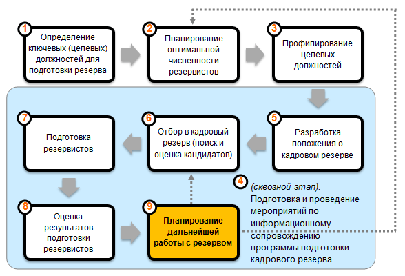
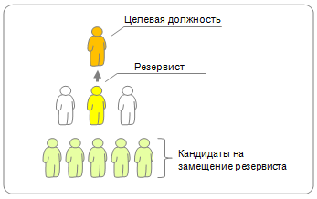

9 шагов по формированию кадрового резерва
Подготовка кадрового резерва является стратегическим приоритетом для организации. Наличие компетентных, подготовленных специалистов, готовых к продвижению на ключевые должности, гарантирует кадровую безопасность бизнеса и уверенность в завтрашнем дне.
Кадровый резерв – это особая категория сотрудников, которые прошли специальную подготовку и обучение, и обладают высоким уровнем готовности к назначению на целевые должности.
Учитывая масштаб и сложность задачи, работа по созданию кадрового резерва требует от HR-менеджера комплексного подхода и тщательного планирования. Неверно определенная последовательность действий в работе с резервом или пропуск важного этапа ставит под угрозу качество и результативность всей работы.
В данной статье описывается поэтапная программа создания кадрового резерва предприятия. Её можно использовать в качестве основы и ориентира для разработки собственной программы подготовки резерва.

9 шагов по формированию кадрового резерва
Процесс формирования кадрового резерва можно разделить на 9 этапов:
Этап 1. Определение целевых должностей
Шаг первый: Анализ организационной структуры и штатного расписания предприятия.
Цель: оценить укомплектованность подразделений компании кадрами.
Анализируя штатное расписание, важно выделить подразделения, в которых существует нехватка квалифицированных кадров (длительно открыты вакансии, высокая текучесть, небольшой средний возраст/стаж работы персонала отдела). Подразделения, в которых недоукомплектован штат сотрудников, являются дефицитными в отношении потенциальных резервистов.
Важно!
При подготовке кадрового резерва необходимо планировать замещение высвобождающихся позиций, которые появятся в случае назначения резервистов на целевые должности. Организация не должна допускать возникновения кадровых «пустот», особенно если речь идет об узких специалистах и редких профессиях, представителей которых сложно найти на внешнем рынке.
На место, которое ранее занимал резервист, важно также своевременно подобрать (или подготовить) кандидата.

Шаг второй: Риск-анализ кадрового состава предприятия.
Цель: выявить наиболее приоритетные позиции для подготовки кадрового резерва.
Критерии:
-
Вклад в достижение бизнес-результата компании
Важно помнить, что существенный вклад в достижение результатов обеспечивают не только руководители, но специалисты с уникальной (редкой, ценной для компании) экспертизы.
-
Перспективы высвобождения должности
Вероятность высвобождения целевой должности определяется следующими факторами и их сочетанием: возраст (пенсионный и предпенсионный), состояние здоровья, вероятность переезда/ротации сотрудника, вероятность ухода в декретный отпуск (для женщин), личные особенности сотрудника, занимающего ключевую должность.
-
Возможность оперативной замены для должности
Наличие/отсутствие квалифицированной замены для сотрудника на целевой должности (заместители для руководящий позиций, коллеги-эксперты для позиций ценных специалистов.
Отдельно стоит отметить должности, которые в компании планируется создать в перспективе 1-2 лет (например, при формировании новых подразделений в рамках расширения бизнеса). При составлении списка целевых должностей также необходимо проанализировать каждую из них с точки зрения важности и срочности подготовки резерва.
Результат 1 этапа: определены должности, требующие приоритетного формирования кадрового резерва.
Этап 2. Планирование оптимальной численности резервистов
Цель: обеспечить кадровую безопасность для ключевых должностей предприятия (снизить кадровые риски, связанные с отказом/увольнением/выбыванием резервистов).
С учетом важности и приоритетности целевой должности, необходимо определить, сколько резервистов потребуется подготовить для минимизации кадровых рисков.
Оптимальное количество резервистов на целевую должность:
2-3 человека.
С одной стороны, подготовка сразу нескольких сотрудников «страхует» целевую должность от риска потери резервиста (из-за его ухода из компании или выбывания из программы резерва). С другой стороны, наличие нескольких претендентов на одну должность, при грамотной HR-политике, создаёт здоровую конкуренцию между резервистами, повышая их мотивацию к саморазвитию (тема о том, как не допустить негативных последствий конкуренции за место, заслуживает отдельного обсуждения).
«Два в одном»
В некоторых случаях, один резервист может стать потенциальным кандидатом сразу на несколько должностей. Это возможно, когда речь идет о должностях, в которых востребованы схожие деловые и профессиональные компетенции (например, главный бухгалтер и начальник финансового отдела или главный инженер и технический директор).
Однако такие случаи - скорее исключение, чем правило. Зачастую они возникают из-за дефицита резервистов на определенные позиции. Мы не рекомендуем использовать политику «универсальных» резервистов, так как это повышает кадровые риски и снижает эффективность целевой подготовки сотрудников.
Столкнувшись с ситуацией дефицита кандидатов в резерв среди внутренних сотрудников, целесообразно организовать поиск потенциальных резервистов на рынке труда.
Результат 2 этапа: определено оптимальное количество резервистов для каждой целевой позиции.
Этап 3. Профилирование целевых должностей
Цель: определить основные требования к профессиональным и деловым качествам, знаниям и навыкам сотрудника на целевой должности.
При профилировании должностей рекомендуется использовать следующие источники информации:
- Должностные инструкции на целевые позиции;
- Положения и бизнес-планы подразделений;
- Результаты интервью с топ-менеджментом и сотрудниками целевых должностей.
Составление профиля должности - важный этап подготовки резерва
В профиле целевой должности, помимо квалификационных требований, следует указать, какой уровень развития компетенций необходим сотруднику для успешного выполнения должностных обязанностей и достижения результатов.
Результат 3 этапа: для каждой целевой должности составлен профиль, включающий квалификационные требования и перечень компетенций, необходимых успешному держателю позиции.
Этап 4. Информационное сопровождение
Одной из распространенных ошибок при внедрении программы кадрового резерва является то, что она разрабатывается и обсуждается узким кругом лиц (как правило, это руководство компании + представители HR) и доходит до персонала в уже готовом виде как «спущенное сверху» нововведение, обязательное к исполнению. Это вызывает у большинства сотрудников естественную защитную реакцию и резко снижает эффективность работы программы, тормозит её внедрение.
В связи с этим, необходимо соблюдать три простых принципа в ходе подготовки и реализации программы кадрового резерва:
-
Информирование
Сотрудникам важно быть в курсе разработки, запуска и работы программы подготовки кадрового резерва. Прежде всего, им необходимо узнать цели и задачи программы, понять, чем она может быть полезна предприятию в целом и лично каждому сотруднику. Недостаточное информирование персонала о нововведении может послужить причиной появления негативных слухов, опасений и привести к непринятию программы резерва частью сотрудников.
-
Вовлечение
Для того чтобы избежать появления ложных представлений и ожиданий от программы подготовки резерва, помимо информирования, необходимо целенаправленно вовлекать персонал в обсуждение проекта, предоставлять возможность открыто высказывать свое мнение о программе, задавать вопросы и выдвигать предложения.
-
Усиление значимости
Участие в проведении информационных мероприятий топ-менеджеров и неформальных лидеров способно существенно повысить значимость программы и подчеркнуть её важность для организации. Нам известны случаи, когда проведение информационных мероприятий поручалось рядовому сотруднику отдела персонала, так как считалось, что это довольно простая задача. Однако персонал компании не воспринимал всерьез слова о значимости программы из уст человека, который не обладал в их глазах достаточным авторитетом. В результате реализация программы существенно затянулась, так как было потрачено дополнительное время на проведение повторных встреч с участием высшего руководства компании.
Рекомендуемые действия:
Шаг первый: Разработка информационных материалов.
Цель: обеспечение полноты и доступности сведений о кадровом резерве для персонала.
Информационные материалы позволяют сотрудникам своевременно и в доступной форме получать необходимые сведения о кадровом резерве, избегая домыслов, искажений и слухов.
Шаг второй: Разработка плана информационного сопровождения программы.
Цель: информационная поддержка сотрудников на всех этапах работы программы кадрового резерва.
Процесс информационного сопровождения:
-
Подготовка
Старт за 1-2 месяца до запуска программы. Информирование сотрудников о проекте кадрового резерва, преимуществах программы подготовки резервистов для предприятия и сотрудников. Задача – сформировать у сотрудников понимание важности подготовки резервистов, реалистичные ожидания, преодолеть возможное сопротивление и скептическое отношение к нововведению за счет своевременного и максимально полного информирования персонала.
-
Освещение процесса
С момента запуска программы и в период её функционирования. Информирование сотрудников о ходе работы программы. Задача – поддерживать внимание и вовлеченность персонала в проект, исключить появление негативных слухов и ложных представлений.
-
Подведение итогов
Результаты работы программы за период. Информирование персонала об итогах программы подготовки, достижениях её участников (лучшие наставники, лучшие резервисты), назначениях резервистов и дальнейшей работе программы. Задача – продемонстрировать результативность программы, подчеркнуть соответствие поставленных целей и задач полученным результатам/
Важно! Используйте разнообразные источники информирования сотрудников:
Очные встречи – личные встречи с сотрудниками, руководителями, неформальными лидерами, информирование их о целях и задачах программы подготовки кадрового резерва.
Печатные материалы – публикации в корпоративной газете/доске объявлений, информационные буклеты, баннеры и пр.
Электронные материалы – информационные рассылки, объявления на корпоративном портале, создание специального раздела на внутреннем сайте, запуск чат-бота в рамках проекта и т.п.
Информируйте сотрудников о программе кадрового резерва
Результат 4 этапа: персонал компании осведомлён и вовлечён в программу подготовки кадрового резерва.
Этап 5. Разработка положения о кадровом резерве
Цель: формализация процесса подготовки кадрового резерва организации.
Действия:
-
Составление проекта положения о кадровом резерве
Вопрос, который задают многие менеджеры по персоналу: «Зачем вообще создавать Положение? Можно ли без него обойтись?».
Во-первых, положение о кадровом резерве помогает структурировать этапы программы, документально зафиксировать зоны ответственности участников программы, четко определить их права и обязанности. Кроме того, положение будет являться важным источником информации для персонала о целях, задачах и механизме работы программы подготовки кадрового резерва.
Во-вторых, положение, являясь официальным документом предприятия, подчеркивает важность кадрового резерва для компании и серьезность намерений руководства по отношению к нововведению. Документальное подтверждение намерений руководства для многих сотрудников автоматически повышает статус проекта, это полезно помнить.
-
Согласование проекта положения о кадровом резерве с руководителями подразделений
На данном этапе очень важно вовлечь менеджмент компании в процесс доработки и согласования положения о кадровом резерве. Это будет способствовать не только получению ценных дополнений к положению со стороны руководителей, но и снимет эффект «навязанного сверху» решения.
-
Утверждение положения высшим руководством предприятия
После того, как положение прошло процесс согласования на уровне менеджеров, оно принимает статус официального документа компании.
Результат 5 этапа: согласованное и утверждённое Положение о кадровом резерве.
Этап 6. Отбор кандидатов в программу подготовки резерва
Цель: поиск и отбор кандидатов, соответствующих требованиям к резервистам.
Выдвижение кандидатов в резерв может проводиться тремя способами:
- Выдвижение сотрудника его непосредственным руководителем;
- Выдвижение сотрудника руководителем «через уровень» (если резерв формируется на позицию непосредственного руководителя сотрудника);
- Самовыдвижение сотрудника.
Сотрудники, чьи кандидатуры были заявлены на зачисление в резерв, проводят стандартизированную процедуру отбора, задача которого – выявить потенциал сотрудника и его готовность к прохождению программы подготовки. Отбор целесообразно проводить в 2 этапа:
1) Предварительный отбор. Проверка формального соответствия кандидата требованиям зачисления в кадровый резерв.
Возраст кандидата в резерв
Не менее 25 лет, но не более 60 лет
соответствует / не соответствует
Стаж работы на предприятии
Не менее 3-х лет
соответствует / не соответствует
Наличие целевых должностей (по профилю деятельности сотрудника)
есть / нет
Наличие дисциплинарных взысканий за время работы
есть / нет
Результативность работы сотрудника в динамике (предыдущий / текущий год)
Результативность высокая/растёт;
Результативность средняя;
Результативность низкая/падает.
Профессиональные достижения сотрудника
есть / нет
2) Основной отбор. Оценка компетенций кандидатов в резерв, проводится в соответствии с утвержденным профилем для целевой позиции.
Пример оцениваемых компетенций кандидата в резерв:
- Понимание бизнеса;
- Навыки планирования и организации работы;
- Умение анализировать информацию и принимать взвешенные решения;
- Лидерские качества, умение выстраивать отношения;
- Стремление к результату и ответственность;
- Открытость новому, обучаемость и стремление к развитию.
Методы оценки кандидатов в резерв: ассессмент-центр, анализ результатов работы, кейс-тестинг, интервью по компетенциям, тестирование (профессиональное, личностное).
Источники дополнительной информации о компетенциях кандидатов: экспертная оценка коллег, руководителя, подчиненных сотрудника (при наличии) по методу 360 градусов.
Результат 6 этапа: итоговый список кандидатов на зачисление в кадровый резерв.
Этап 7. Подготовка резервистов
Цель: повышение квалификации и развитие компетенций резервистов до требуемого уровня.
Подготовку резервистов можно разделить на 2 направления: общее и индивидуальное.
Общая программа подготовки кадрового резерва
Задача: развитие компетенций резервистов, применимых для всех целевых должностей
В данном случае речь идет о составлении единой для всех резервистов программы подготовки, которая включает в себя групповые формы обучения (тренинги, семинары, мастер-классы и т.д.), направленные на развитие универсальных компетенций, важных на любой целевой должности в компании.
Чаще всего общая программа направлена на развитие управленческих и деловых компетенций, что позволяет компании существенно оптимизировать затраты и сократить время обучения.
Пример обучающих модулей в программах общего развития кадрового резерва:
- Развитие базовых навыков управления;
-
«4 функции руководителя: Планирование, Организация, Контроль, Делегирование» (тренинг);
«Навыки принятия управленческих решений»;
«Мотивация подчиненных» и др.
- Развитие управленческого мышления;
-
«Навыки системного мышления» (тренинг);
-
«Креативное мышление в бизнесе» и др.
- Личная эффективность сотрудника;
-
«Управление временем» (тренинг);
-
«Навыки работы в команде»;
-
«Командное лидерство» и др.
Как правило, программа общей подготовки планируется на 1 год и реализуется в рамках внутреннего обучающего центра (силами внутренних тренеров), либо с привлечением внешних тренинговых компаний (либо сочетание обоих способов)
Индивидуальная программа подготовки резервиста
Задача: повышение квалификации и развитие специальных компетенций резервиста, с учетом требований целевой должности и личных особенностей сотрудника.
Помимо прохождения общей программы обучения, для каждого резервиста составляется индивидуальный план развития (как правило, также на 1 год), в котором сочетаются различные методы развития профессиональных и деловых качеств, необходимых для успешной работы на целевой должности.
Основные методы индивидуального развития резервиста:
- Развитие на рабочем месте – получение нового опыта без отрыва от основной трудовой деятельности;
- Развивающие поручения – решение рабочих задач, направленных на развитие требуемых компетенций сотрудника;
- Участие в развивающих проектах – формирование проектных групп из числа резервистов и других сотрудников для достижения бизнес-результатов, и развития компетенций резервистов;
- Временные замещения и ротации – получение необходимого профессионального опыта и знаний при временном исполнении резервистом обязанностей вышестоящего руководителя или сотрудника из смежного бизнес-направления;
- Обучение на опыте других (работа с наставником) – развитие компетенций при взаимодействии с более опытными сотрудниками в ходе совместной работы.
Наставничество в программе кадрового резерва
Рекомендация: для повышения развивающего эффекта от программ развития, полезно использовать систему наставничества в отношении резервистов. Для этого рекомендуется закрепить за каждым резервистом наставника из числа более опытных коллег или руководства.
В случае необходимости также следует организовать предварительное обучение будущих наставников навыкам, которые им потребуются для успешной передачи опыта и знаний резервистам.
Использование наставничества повышает качество подготовки резерва
Важно!
Используя систему наставничества при подготовке резервистов, необходимо заранее продумать систему мотивации самих наставников. Работа на одном энтузиазме быстро приведет к снижению вовлеченности и качества работы наставника.
Варианты мотивации наставников:- Регулярная надбавка за наставничество (ежемесячная/квартальная);
- Поощрения за достижения (доплата наставникам за достижение резервистами прогресса в развитии, критерии оценки и её периодичность согласуется заранее);
Мониторинг качества подготовки резервистов
Рекомендуется проводить регулярные промежуточные встречи резервистов и их наставников с сотрудниками службы персонала для оценки прогресса в развитии. Своевременная корректировка индивидуального плана развития резервиста в случае необходимости.
В некоторых организациях для мониторинга качества подготовки кадрового резерва проводятся регулярные ассессмент-центры.
Результат 7 этапа: повышение квалификации и развитие необходимых компетенций резервистов.
Этап 8. Оценка результатов подготовки кадрового резерва
Цель: определение соответствия квалификации и уровня развития компетенций резервистов требованиям целевых должностей.
Итоговая оценка резервистов проводится по нескольким направлениям:
- Оценка производственных результатов – динамика производительности труда резервиста по итогам подготовки (увеличилась / уменьшилась / осталась без изменений);
- Оценка результатов прохождения общей программы подготовки и выполнения индивидуальных планов развития - динамика роста профессиональных и деловых/управленческих качеств резервиста по сравнению с показателями первичной оценки (при отборе);
- Оценка результатов проектной работы – качественная и количественная оценка развивающих проектов, определение вклада резервиста в достижение проектного результата.
Результаты подготовки кадрового резерва должны быть объективными
Результаты итоговой оценки позволяют руководству проекта принять решение в отношении каждого резервиста:
- Поощрение успешных резервистов, продемонстрировавших рост результативности и повышение уровня развития компетенций и квалификации;
- Исключение из резерва сотрудников, которые продемонстрировали снижение производственных показателей и/или отсутствие прогресса в развитии (результаты оценки ниже установленных требований).
Результат 8 этапа: выявлены резервисты с высоким уровнем готовности для замещения вакантных целевых должностей.
Этап 9. Планирование дальнейшей работы с резервом
Действия:
-
При наличии открытых вакансий на целевые должности
Приоритетное рассмотрение кандидатов на замещение из числа успешных резервистов.
-
Планирование назначений и ротации кадров
Составление плана адаптации резервиста на новой должности;
Закрепление за резервистом на период адаптации/испытательного срока наставника из числа вышестоящих руководителей или опытных коллег для обеспечения необходимой поддержки.
-
При отсутствии открытых вакансий на целевые должности
Планирование мероприятий по удержанию перспективных сотрудников на предприятии.
Для чего удерживать резервистов?
Резервисты, успешно прошедшие программу подготовки и повысившие свой профессиональный уровень, зачастую «вырастают» из своей текущей должности. Этот факт и отсутствие карьерного продвижения может серьезно снизить мотивацию сотрудника и в некоторых случаях, послужить причиной ухода из компании в поисках более перспективной работы. Для минимизации этого риска, полезно спланировать программу по удержанию резервистов в организации.
Программа может включать в себя следующие способы удержания (зависят от возможностей и кадровой политики компании):
- Расширение функциональных обязанностей сотрудника, увеличение зоны его ответственности и уровня принятия решений (по возможности, добавление части менеджерских или экспертных функций, например, руководство каким-либо ответственным проектом);
- Надбавка к заработной плате - может выглядеть как дополнительная индексация за успешное завершение программы подготовки резерва;
- Предоставление дополнительных корпоративных льгот - расширение существующего перечня бенефитов сотрудника;
- Присвоение более высокой квалификационной категории (грейда) - также может служить основанием для индексации заработной платы;
- Организация временных замещений руководителя - исполнение обязанностей на целевой должности на время отпуска, командировок и отсутствия действующего сотрудника;
- Возможность стать наставником для менее опытных сотрудников.
При выборе методов удержания рекомендуется учитывать индивидуальные потребности сотрудника (например, для некоторых более важным является материальная составляющая, а для кого-то получение более высокого статуса в компании и т.п.).
Результат 9 этапа: продвижение подготовленных резервистов на вакантные целевые должности, сохранение кадрового потенциала предприятия за счет удержания перспективных сотрудников в кадровом резерве.
Автор материала: Беспалов Игорь Александрович ©
Надеемся, что приведенные в данной статье рекомендации, помогут Вам правильно спланировать работу по созданию кадрового резерва в Вашей компании и позволят избежать стандартных ошибок в ходе реализации намеченной программы.
Воспользуйтесь нашими обучающими материалами, чтобы провести оценку и обучение резервистов, тренинг для наставников или скорректировать программу лояльности для удержания успешных сотрудников. Мы всегда рады помочь нашим клиентам и покупателям при возникновении вопросов. В течение 6 месяцев после приобретения наших материалов консультации предоставляются бесплатно.
Вы можете заказать услугу по созданию кадрового резерва в вашей организации или самостоятельно освоить полезные технологии для работы с резервом, используя наши обучающие материалы:

наверх
наверх ▲